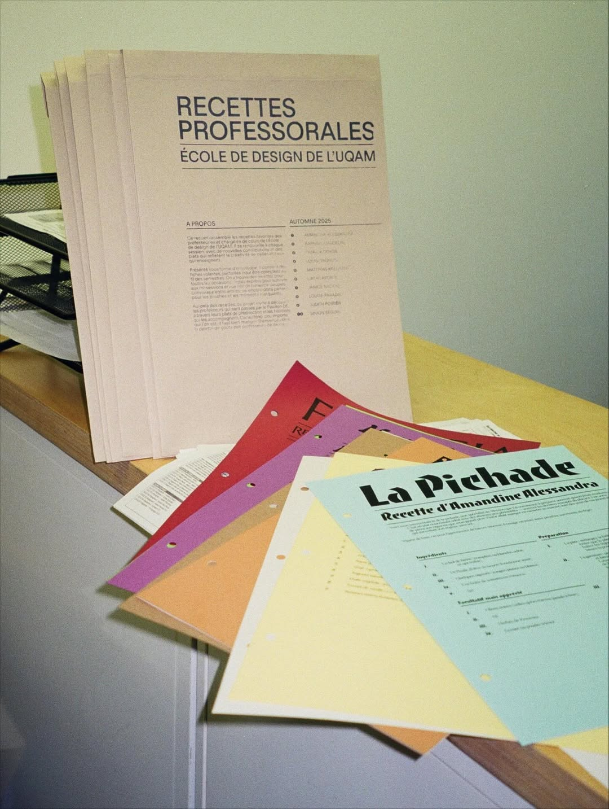
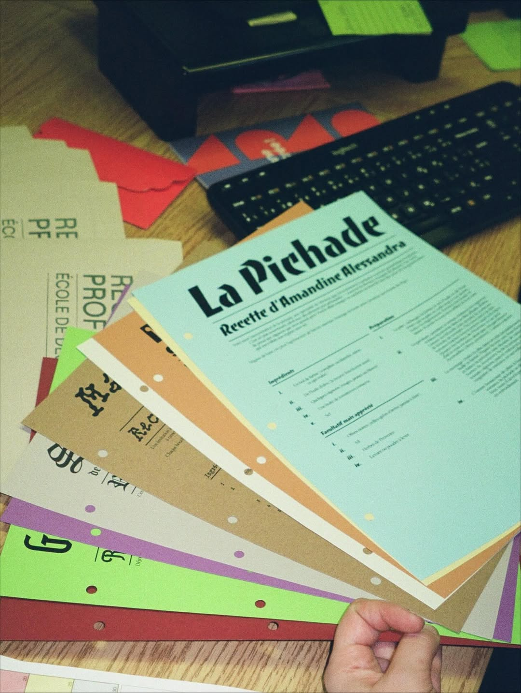
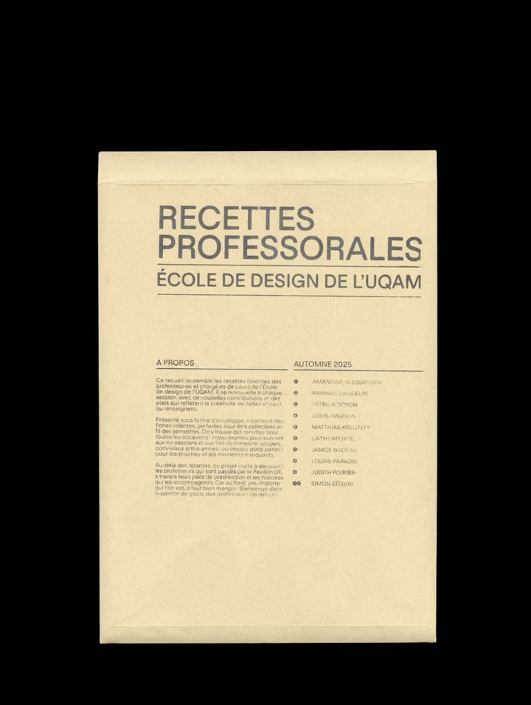
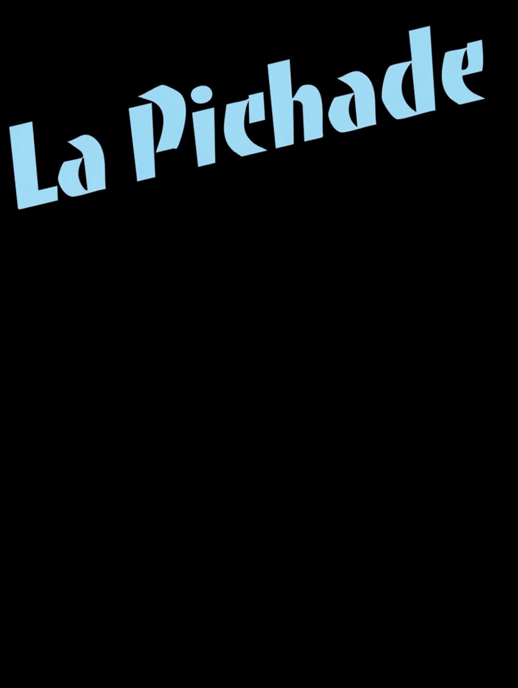

Professorial Recipes is a collection of loose-leaf recipe cards featuring dishes contributed by professors and lecturers from UQAM's School of Design during the Fall 2025 semester.
Rather than relying on photography, the project explores how typography alone can communicate the character, origins, and atmosphere of a recipe. Each card interprets a dish through carefully selected typefaces, paper stocks, and colors, transforming culinary instructions into a graphic experience. Drawing on vernacular lettering, decorative type, and culturally resonant visual references, the design reflects the heritage and context of each recipe without the use of images.


By treating typography as a storytelling medium, the project bridges food culture and graphic design, creating a growing archive that documents both culinary traditions and typographic expression. Intended as an evolving publication, the collection expands with each semester, preserving the personal recipes of faculty members while celebrating the expressive potential of type.


Credits
Created under the supervision of Daniel Robitaille in the Typography Variations course at UQAM's School of Design, Fall 2025.